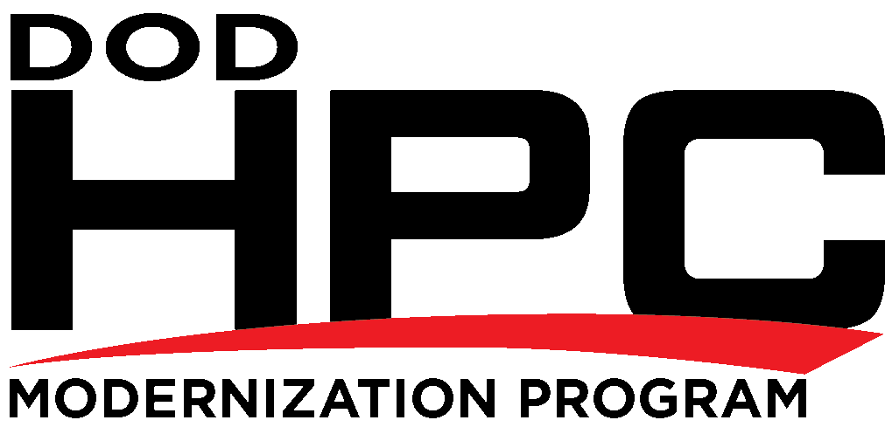
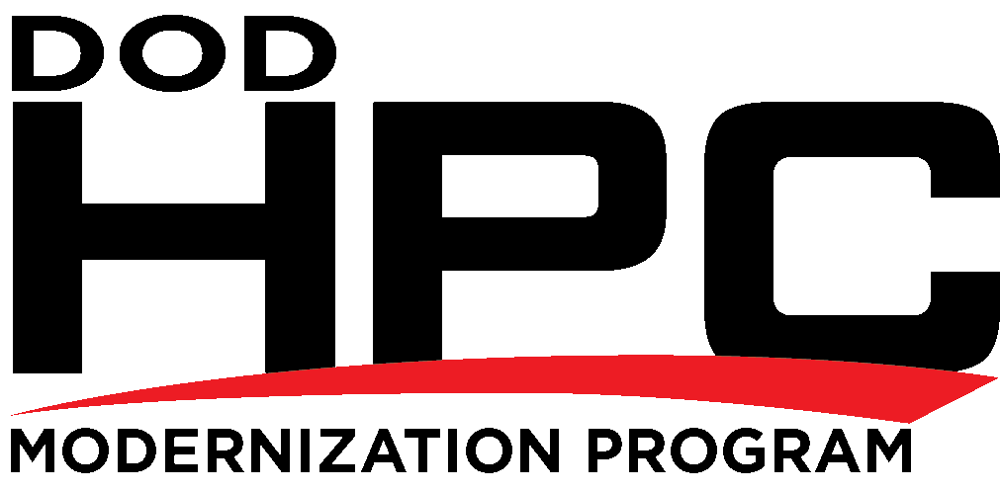

The HCPMP is in the process of implementing a new archival storage service as part of the Storage Lifecycle Management (SLM) project. In order to accommodate this new archival storage service, certain object types, directory and file names will only be supported on archive systems within a regular file container such as a tar file. Prior to the new archival storage service no specific direction was given across the HPCMP for object types or directory and file name support on archive systems.
Archive systems directory and file names will not support ASCII control characters, some special characters or leading and trailing SPACE characters. In addition only regular files and directories will be supported. Also unsupported are large object-count directories. Up to 250K files or directories per directory will be supported. Characters that are supported in object names on the archive systems of HPCMP include all alphanumeric characters and most printable ASCII characters. The supported characters are the subset of printable ASCII characters, ASCII 32 to ASCII 126, hex 20 to 7e, excluding the special characters SLASH (ASCII 47, h2f, /), BACKSLASH (ASCII 92, h5c, \), and ASTERISK (ASCII 42, h2a, *) and the SPACE (ASCII 32, h20, ' ') as leading or trailing characters.
Unsupported object types, directory and file names will still be supported within a regular file container such as a tar file.
We have provided a script at ${SAMPLES_HOME}/slm/bad-files that will traverse your directory structure and provide output containing the unsupported objects and object names. The script can be used to review your archive holdings proactively or to confirm that issues you received notification of have been addressed. We request that you examine your archive data for unsupported objects, delete anything other than regular directories and files, and re-name unsupported object names.
Users will be notified if they have files with bad names, unsupported file types, or unsupported large object-count directories.
Please update your scripts accordingly so that newly created files do not contain these unsupported attributes. For more information see the longer version below.
Thank you for your continued support of this initiative and please contact CCAC with questions/concerns.
The HCPMP is in the process of implementing a new archival storage service as part of the Storage Lifecycle Management (SLM) project. The ARL, AFRL, ERDC, Navy, ORS, and MHPCC DSRCs are preparing the archive filesystems in order to accommodate this upcoming solution for both good practice and technical reasons.
We will need your help with the good practice remediation aspect.
An example of good practice is cleaning up non-printing characters, such as ASCII control character codes for BACKSPACE, TAB, RETURN, DELETE and others, that are occasionally introduced by accident into directory and file names.
They present a low-level risk to system security and integrity. They cause problems retrieving files from system backups, and with scripted verification. Almost invariably, they cause confusion for the owner and group owners of the file, who have trouble renaming, deleting, or using the files because the file names simply aren't as they appear to be.
Users will not be able to see files on the archival storage systems with bad names from the new archival storage interface. Once we switch to the new archival storage interface users will no longer be able to archive files with bad names or of unsupported types except within a regular file container such as a tar file.
Unsupported object types, directory and file names will still be supported on archive systems within a regular file container such as a tar file.
Only regular files and directories will be supported.
Output from the ls -l command shows the file system object type code as the first character.
| Object Type Code | Supported | Description |
|---|---|---|
| d | yes | The entry is a directory. |
| - | yes | The entry is an ordinary file. |
| D | no | The entry is a door. |
| l | no | The entry is a symbolic link. |
| b | no | The entry is a block special file. |
| c | no | The entry is a character special file. |
| p | no | The entry is a FIFO (or "named pipe") special file. |
| P | no | The entry is an event port. |
| s | no | The entry is an AF_UNIX address family socket. |
Existing objects of unsupported types in your archive files will not be visible through the new service.
In SLM names with unsupported characters will be disallowed when you try to create a new object and existing objects having these names in your archive files will not be visible through SLM.
Also unsupported are large object-count directories. 'Large' means more than 250,000 directories and/or files within a single directory. An ‘ls | wc –l’ within a directory will produce a count of the number of objects.
We have provided a script at ${SAMPLES_HOME}/slm/bad-files that will traverse your directory structure and provide output containing the unsupported objects and object names. The script can be used to review your archive holdings proactively or to confirm that issues you received notification of have been addressed. We request that you examine your archive data for unsupported objects, delete anything other than regular directories and files, and re-name unsupported object names.
Users will be notified if they have files with bad names, of unsupported file types, or unsupported large object-count directories.
Please update your scripts accordingly so that newly created files do not contain these attributes.
Thank you for your continued support of this initiative and please contact CCAC with questions/concerns.
Dear <USER>,
Files you own will not be supported by the new archival storage service as part of the Storage Lifecycle Management (SLM) project. Archive systems directory and file names will no longer support ASCII control characters, some special characters or leading and trailing SPACE characters. In addition only regular files and directories will be supported. Also unsupported are large object-count directories.
We have provided a script at ${SAMPLES_HOME}/slm/bad-files that will traverse your directory structure and provide output containing the unsupported objects and object names. The script can be used to review your archive holdings proactively or to confirm that issues you received notification of have been addressed.
| CCAC URL: | http://centers.hpc.mil |
| DSN: | 785-0679 |
| Toll Free: | 1-877-CCAC-039 (1-877-222-2039) |
| Commercial: | 1-937-255-0679 |
| FAX: | 1-937-656-9538 |
| Emails: | help@ccac.hpc.mil (CCAC Service Center) |